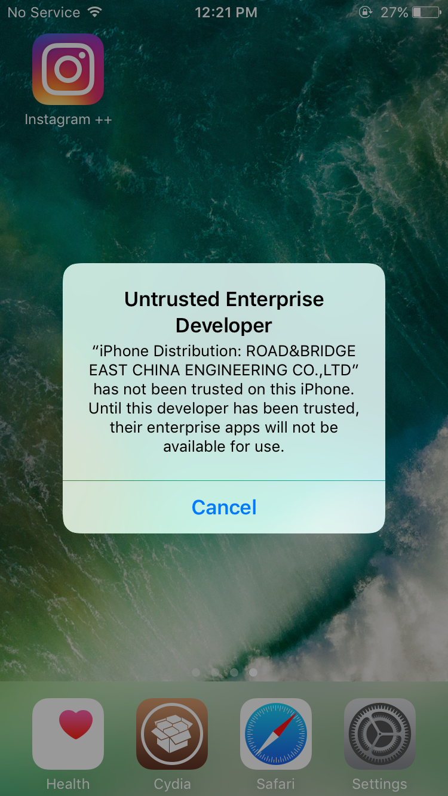
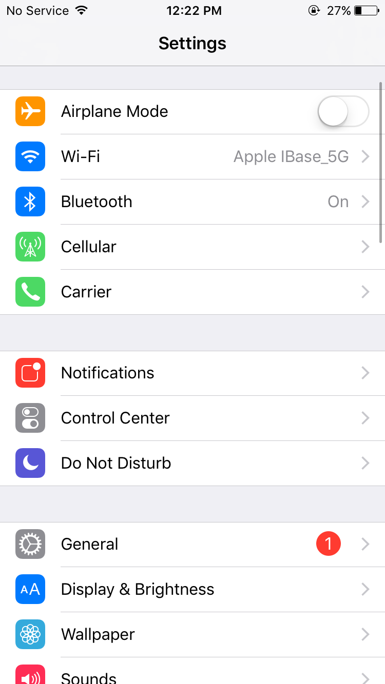
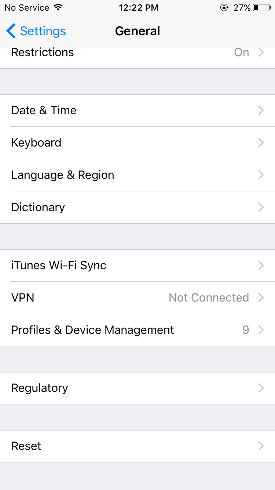
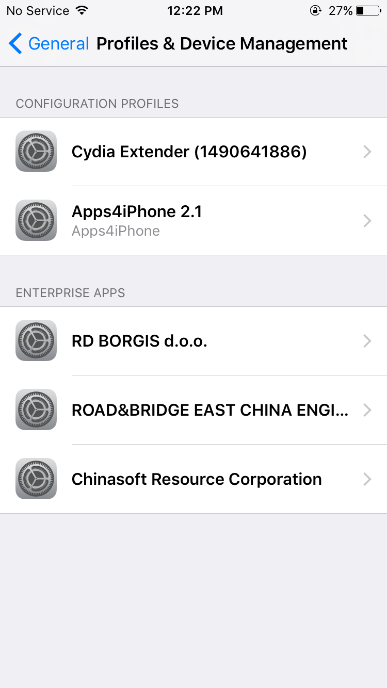
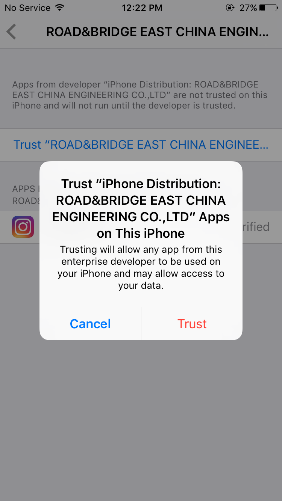

<div class="pages">
  <div data-page="about" class="page">
    <div class="page-content">
      <div class="navbar">
        <div class="navbar-inner">
          <div class="left"><a href="#" class="back link"> <i class="icon icon-back"></i><span>Back</span></a></div>
          <div class="center sliding">Fix Untrusted Enterp. Developer</div>
        </div>
      </div>

      <div class="card">
        <div class="card-content">
          <div class="card-content-inner"><h3>1.Go to Settings if you see that error <br><br> <br><br>2. Select "General" <br><br> <br><br>3. Scroll down untill "Profiles & Device Management" category <br><br> 
          <br><br>4. Select a proper certificate <br><br> <br><br>5. Click on "Trust" to fix the app <br><br> <br><br>6. Launch and enjoy the App!</h3></div>
        </div>
      </div>


    </div>
  </div>
</div>

<script>
  (function(i,s,o,g,r,a,m){i['GoogleAnalyticsObject']=r;i[r]=i[r]||function(){
  (i[r].q=i[r].q||[]).push(arguments)},i[r].l=1*new Date();a=s.createElement(o),
  m=s.getElementsByTagName(o)[0];a.async=1;a.src=g;m.parentNode.insertBefore(a,m)
  })(window,document,'script','https://www.google-analytics.com/analytics.js','ga');

  ga('create', 'UA-80307991-1', 'auto');
  ga('send', 'pageview');

</script>

<script async src="http://pagead2.googlesyndication.com/pagead/js/adsbygoogle.js"></script>
<script>
  (adsbygoogle = window.adsbygoogle || []).push({
    google_ad_client: "ca-pub-5269481668476589",
    enable_page_level_ads: true
  });
</script>